Mr. Smash Burger
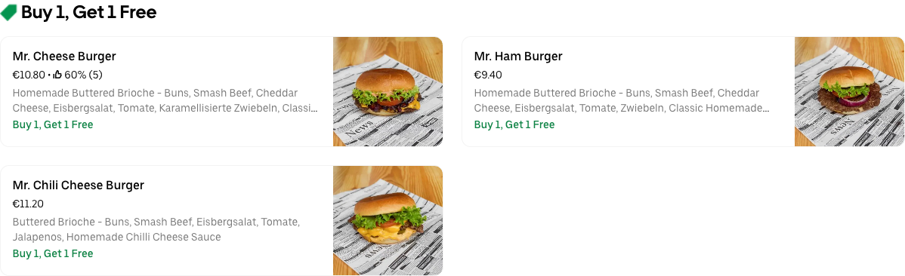Guten Dag & Gong Gan
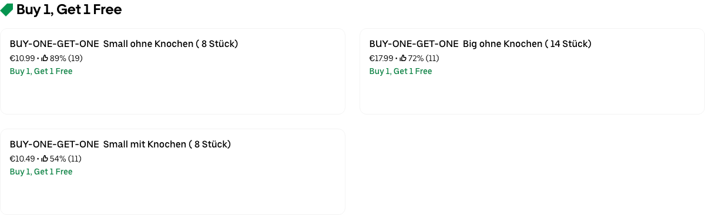Fatoush
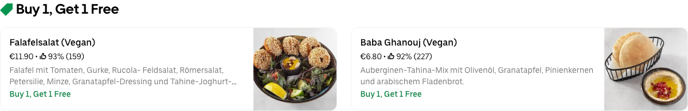NANUH Noodles and Dumplings Victoriastadt
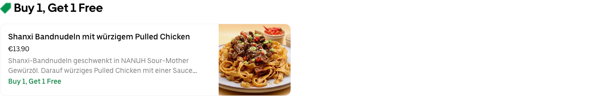Mad Wok Lichtenberg
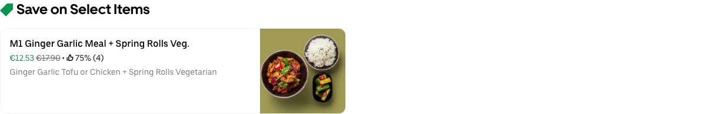Zerostress Pizza & Restaurant Friedrichshain
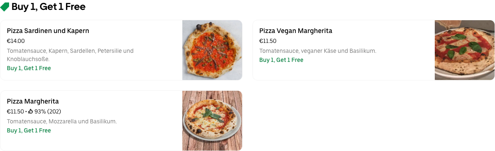Shu Shu Chinese BBQ

Schnitzery Kreuzberg
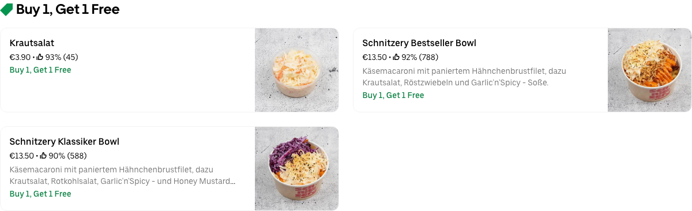Lookma Berlin Kreuzberg
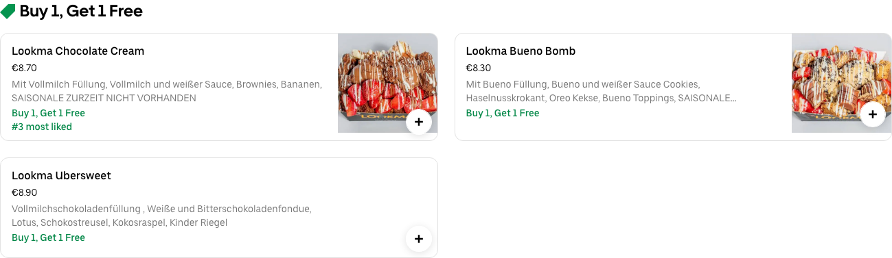Crispy's Chicken 🍗🐔 Friedrichshain

Adana Grillhaus
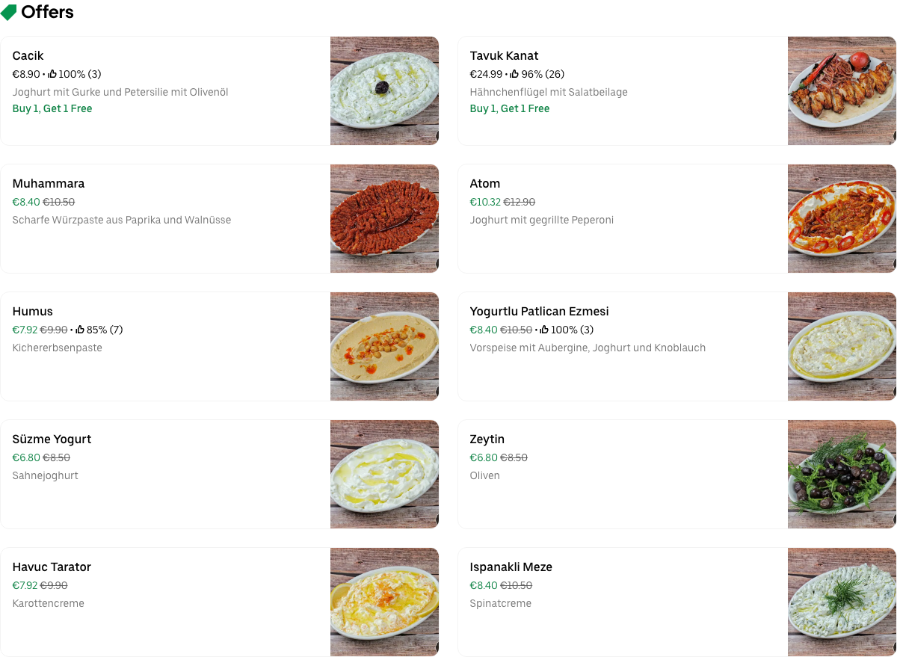Loco Chicken Friedrichshain

Sushi Moto

Honolulu Bowl Friedrichshain

Kebab Club

Pink Elephant

Mann-O-Salwa
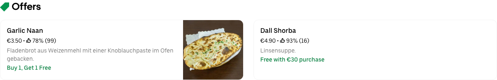Viet Nam & Sushi Bar - Warschauer Str.

The Hummus Club

Maison Viet Kreuzberg

Chay Village Friedrichshain

Burgeramt Imbiss

Angry Chicken - Mitte

Piri's Chicken

Angry Chicken - Mitte
Grindhouse Burgers Kreuzberg

Hühnerhaus36

Tabibito

Marthas Delicious Burgers

Chicken Buzz X-Berg

NYOM Restaurant

BBI - BerlinBurgerInternational

Caphe HOA

Beyond Ramen

Mikoto Sushi - Kreuzberg

WANNA EAT

Angry Chicken Kreuzberg

Fatoush XBerg

Funny Fancy Sushi
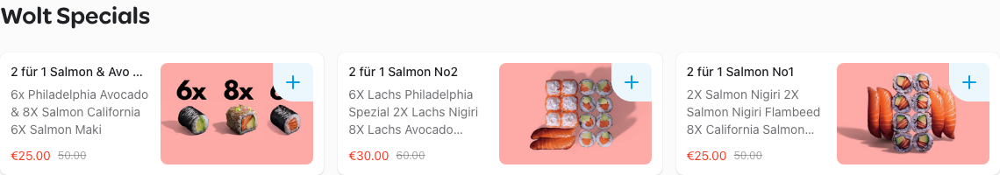Singh Indian Street Food

SushiKoo

Sushi Moto

Marmarita by Fatoush

Takenori

Sanpietrino

Perbacco Ristorante & Pizza

What a treat Friedrichshain

La Femme La.Macun und Pide - Kreuzberg

Urban Falafel

Berlin Tantuni

Sadhu Kreuzberg

Machete Burrito

Huakai Bowl Bar
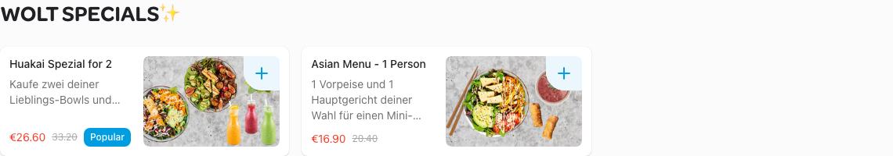Circle & Slice

85Grad Manti - Friedrichshain

Ryu Berlin

Com A - Sushi & Asia Grill

Yogi Ashram

La Focacceria - Steinofen Pizza

Roots

TUDO am Alex

Mandy

No Hablo Español

UP - Ungeheuer Pizza
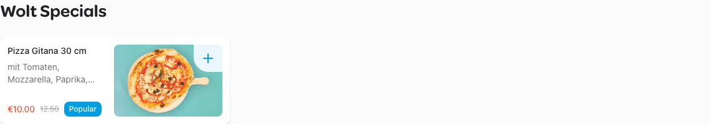Amba Indisches Restaurant

Cargo Gastronomia

Khinkali House

Golden Gingko - 100% Japanese Vegan

Shanxi Nudelhaus
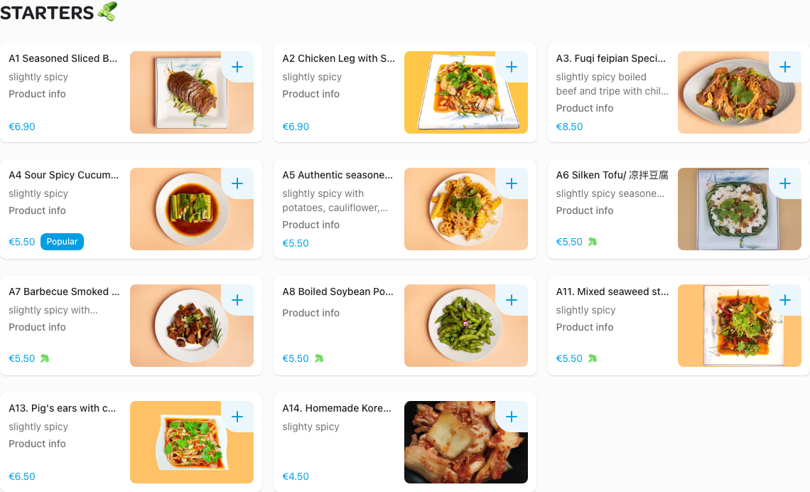Rice Rolls Berlin

Tandoori Palace

PI-KANT Burger

Mubi's Cookies

Bro Burger

Taquito Mio

Papa Nô

LION BURGER

Crunchy Shawarma

Bamboo Bowl "Asia Fusion Kitchen & Sushi"

Turtle Pizza

Noko Noko Berlin
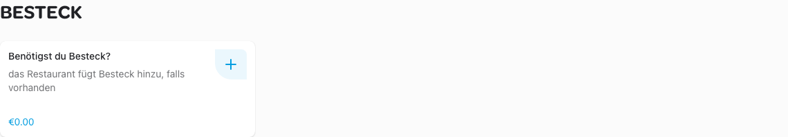District Mot

Chen Che

Silom - Bangkok Street Food

Bao Burger by District Mot

Si An

Back Lounge

Rocca Pizza & Pasta 2

Desi House

Mirch Masala Indian Restaurant

Burger Royal

Aiko Sushi

Mori Mori

Kreuzburger

Wu Kong

Pizza Pasta Haus

Dr. Burger

Café Jenseits
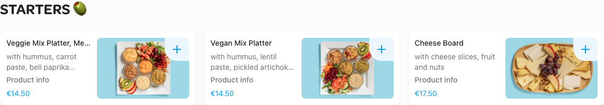Shiro Bowls & Sushi

Cicer - The World of Chickpea

Subway Rinderauktionshalle

DALUMA - Friedrichshain
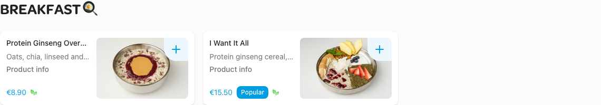DALUMA
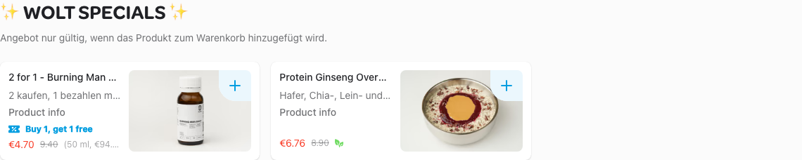Geicha Bubble Tea Kreuzberg

Zaitoun Restaurant
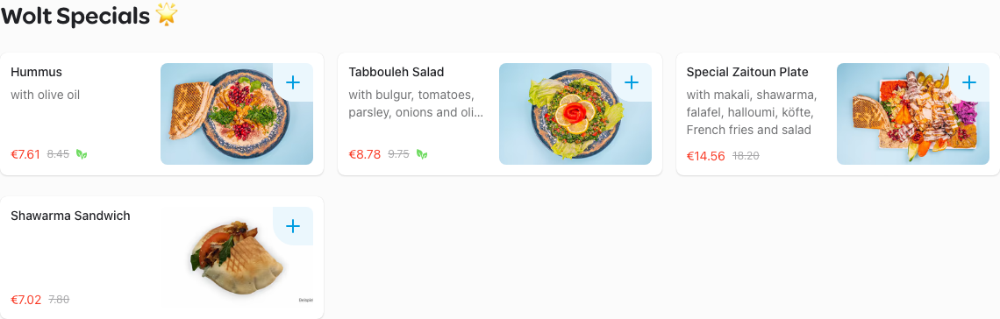I Fancy Chicken
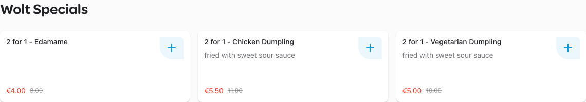Taverna Olive
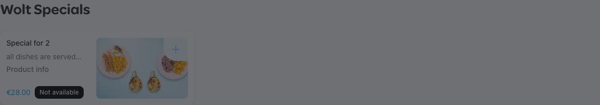Bärenhunger
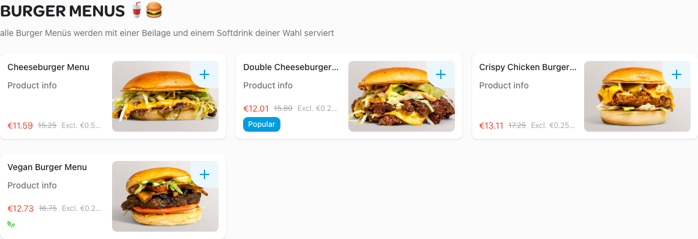Niko Niko Ramen
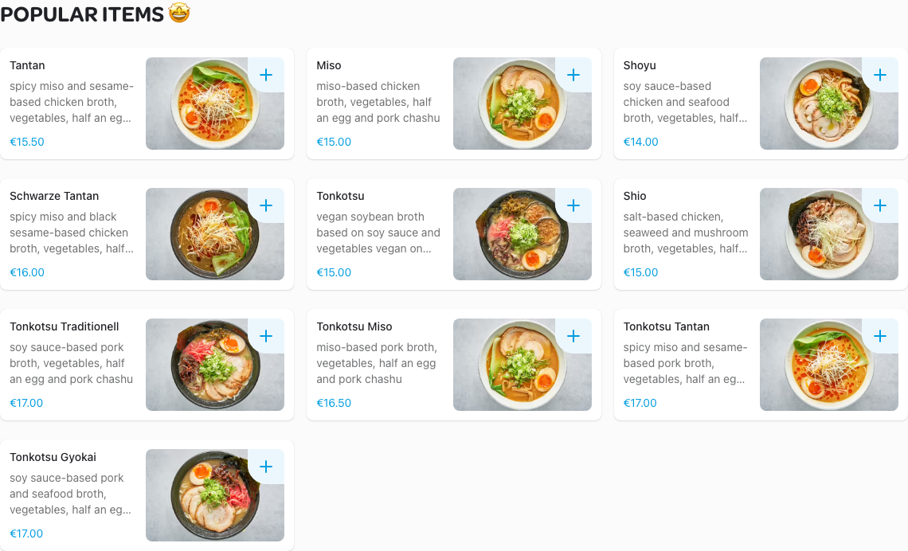VEG'D – Vegan Burger (F-Hain)

Goldies Smashburger Gruenberger

Mmaah Korean BBQ Express - Friedrichshain

Risa Chicken - Neukölln
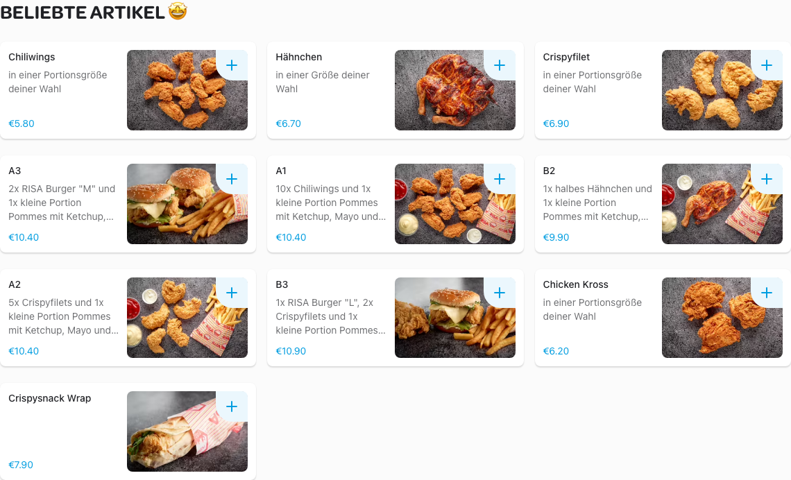
{{lieferando}}